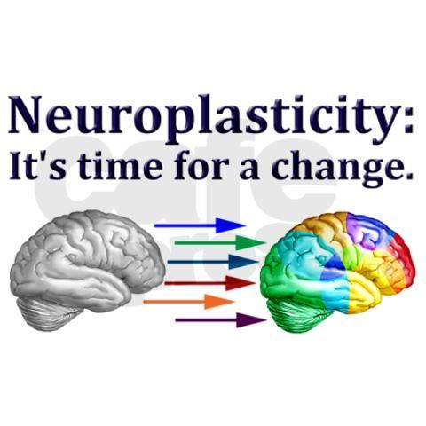

Neuroplastcity is the malleability of the brain to be able to change shape and learn new things.

is beneficial to everyone in the world with a fixed mindset, even just by telling someone about Neuroplpasticity is very helpful and beneficial to the human mind, it can help with achieving your goals and believing in yourself to do whatever you want because your brain has the capacity for anything.
I think I would use Neuroplastcity to help me with this course by believing in myself and telling myself that I can code and so can anyone else, I will also put more effort into my work as I know I can do it because my brain is so malleable.
A way to help increase neuorplasticity is to listen to music, dancing, art, video games!, excercise and if combined neurolpasticity is increased even more.
click here to go to a website showing you the medical definition of neuroplasticity.
A growth mindset is where you are open to change and are willing to put in hard work because you know if you do you will succeed. This is important, as if you believe in yourself then what’s stopping you?
I found it particularly interesting that you can gain muscle just by imaging it as-well as learning an instrument. I feel more inspired as I know I can do it.
I will use a growth mindset to help me accomplish my future challenges, keep myself on task. I will do this by reflecting each day using the word yet more often and self belief.
Here’s a link about how to have a growth mindset.
I reflect that Neuroplasticity has lots of potential if taken onboard which I intend to do with my learning plan.